Basic Bone Structure
Bones are not solid objects. They have two main layers: a dense, compact outer shell that provides strength, and a spongy inner layer with open spaces that help absorb force and reduce weight. This design makes bones both strong and lightweight.
Under a microscope, bone tissue is organized into circular ring-like units called osteons. At the center of each osteon is a canal that carries blood vessels and nerves. Surrounding it are concentric rings of bone material. Nestled between those rings are small, flat cells called osteocytes, which maintain the bone from within. Two other key cell types keep the bone in balance: osteoblasts, which build new bone tissue, and osteoclasts, which break old bone down. When this balance is disrupted, bone disorders can develop.
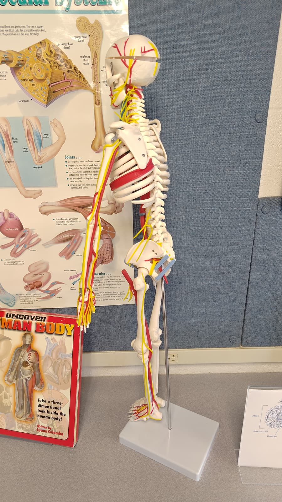
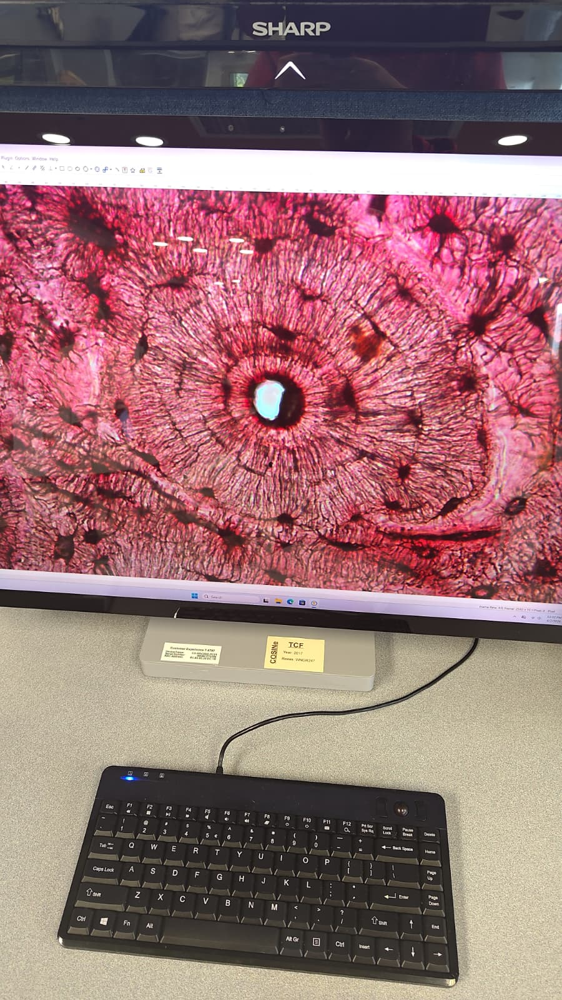
Vertebrae Structure & Safe Lifting
Structure of the Human Vertebrae
The spine is made up of a stack of bones called vertebrae. Each vertebra has a thick, rounded body at the front that carries most of the body's weight. Extending from the back are bony projections that protect the spinal cord and give muscles a place to attach. Between each vertebra are soft, flexible discs that act as cushions, absorbing shock and allowing the spine to bend and rotate.
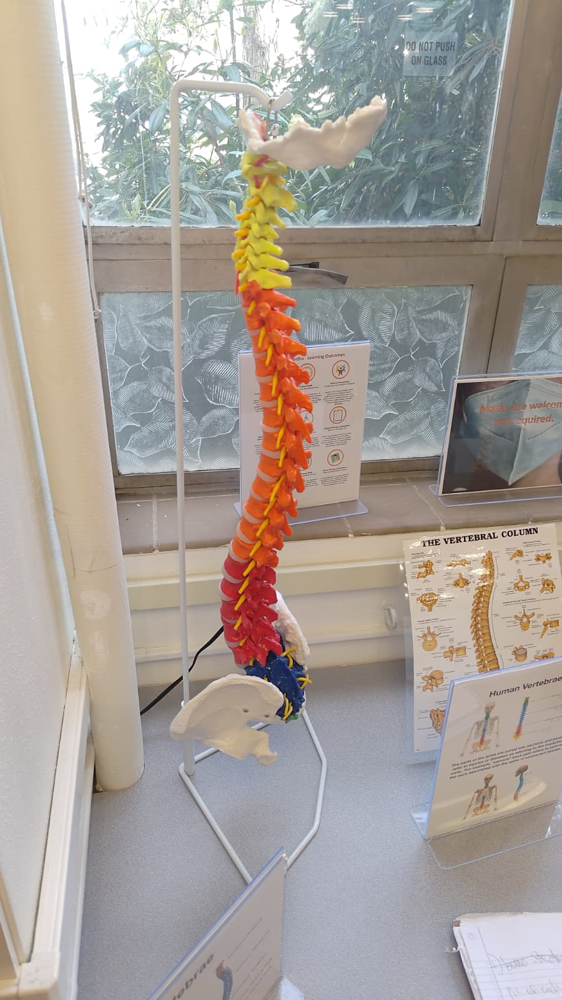
How to Avoid Injury When Lifting Heavy Objects
The three images below show the same physics model in different lifting positions. The body of the model is jointed like a human skeleton so the forces on the spine can be observed directly.
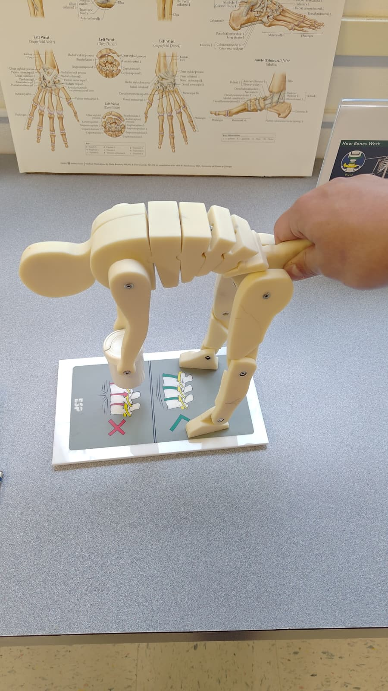
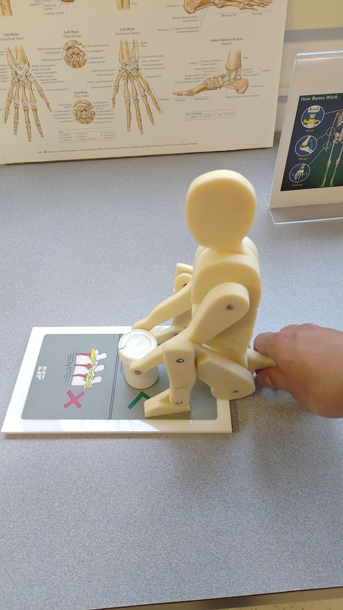
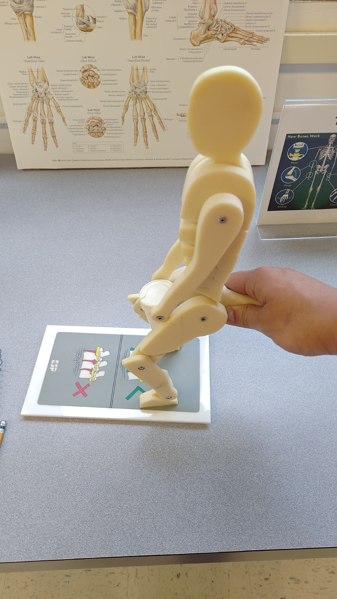
Joints
A joint is any point in the body where two bones meet. Joints are what make movement possible. Different joints allow different ranges and directions of motion depending on their shape and structure.
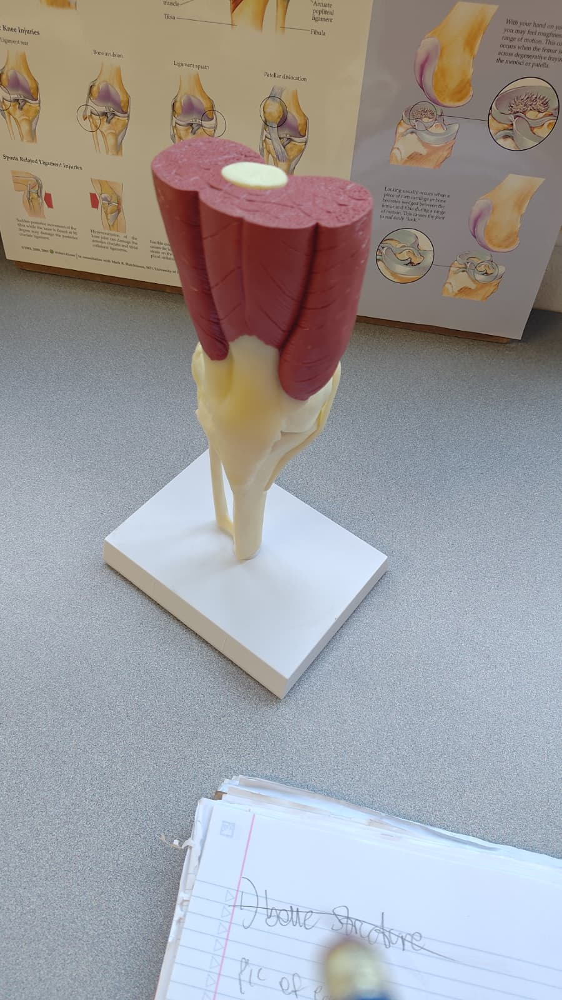
Knee Joint
Location: Where the thigh bone meets the two lower leg bones.
Type: Hinge joint. It bends and straightens in one direction,
like a door hinge.
Movement: Allows walking, running, climbing, and squatting. The
hinge design keeps the joint stable while permitting powerful forward and backward
motion.
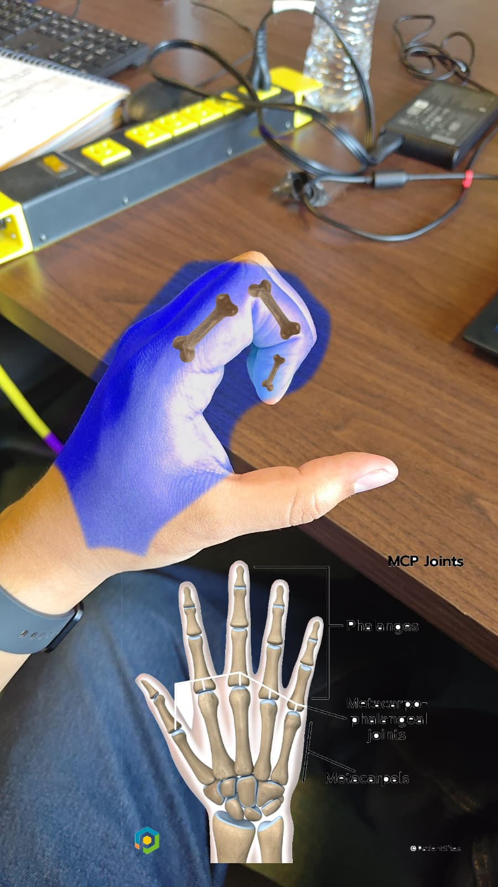
Finger Knuckle Joints (MCP Joints)
Location: At the base of each finger, where the palm bones
connect to the finger bones. These are the knuckles you see when you make a fist.
Type: Condyloid joint. The rounded end of the palm bone fits
into a shallow cup in the finger bone, allowing movement in two directions.
Movement: Lets the fingers bend, straighten, and spread apart.
Essential for gripping, typing, and any fine hand movement.
Bone Disorders
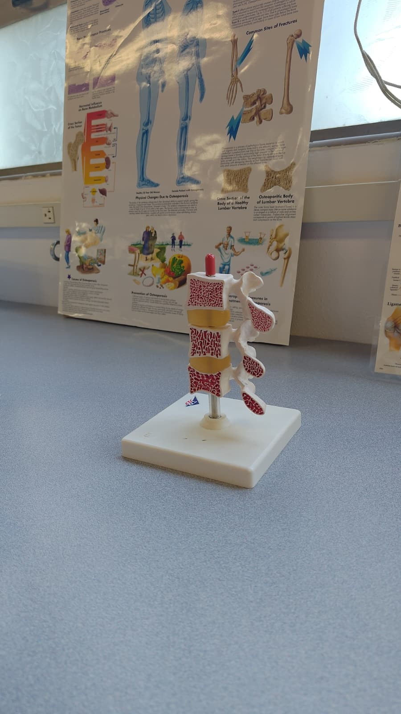
Osteoporosis
Cause: An imbalance between osteoclasts and osteoblasts, where bone is broken down faster than it is rebuilt. This is often triggered by aging, low calcium intake, or lack of physical activity. Astronauts are a well-known example: without the stress of gravity on their bones, they can lose significant bone density in a short time.
Altered function: The bone becomes porous and fragile. Even the normally dense compact outer layer starts to resemble the spongy inner layer. This makes bones far more likely to fracture from forces that a healthy bone would handle easily, such as a minor fall.
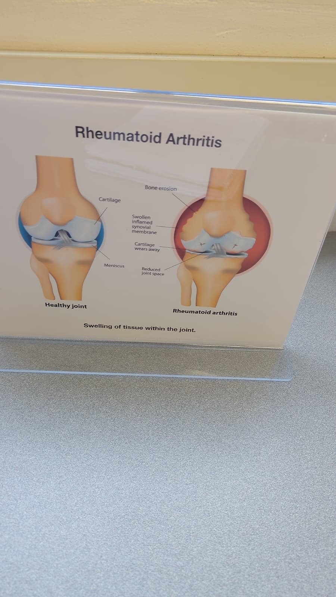
Rheumatoid Arthritis
Cause: An autoimmune condition where the body's immune system mistakenly attacks the membrane lining the inside of joints (the synovial membrane). The resulting inflammation is chronic and progressive.
Altered function: Persistent inflammation erodes the cartilage and eventually the bone at the joint. The joint space narrows, movement becomes painful and restricted, and the joint can become permanently deformed over time.
Basic Muscle Structure
Muscles are made of long, bundled cells called muscle fibers. These fibers are packed with proteins that slide past each other to generate force, which is what makes a muscle contract and shorten.
Under a microscope, skeletal muscle cells (the type that moves your body) appear as long tubes running parallel to each other with a striated, or striped, pattern. Those stripes are the protein structures responsible for contraction. Cardiac muscle (heart muscle) shares that striated pattern but is arranged differently: the cells branch and connect end-to-end, forming a network that lets the entire heart contract as one coordinated unit.
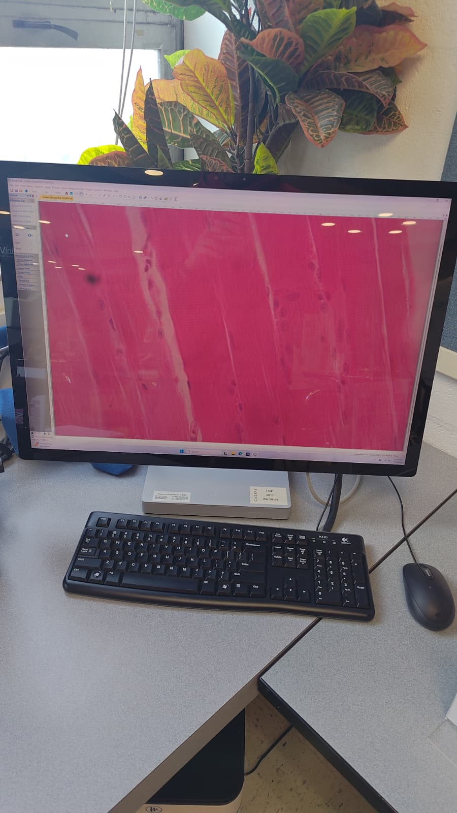
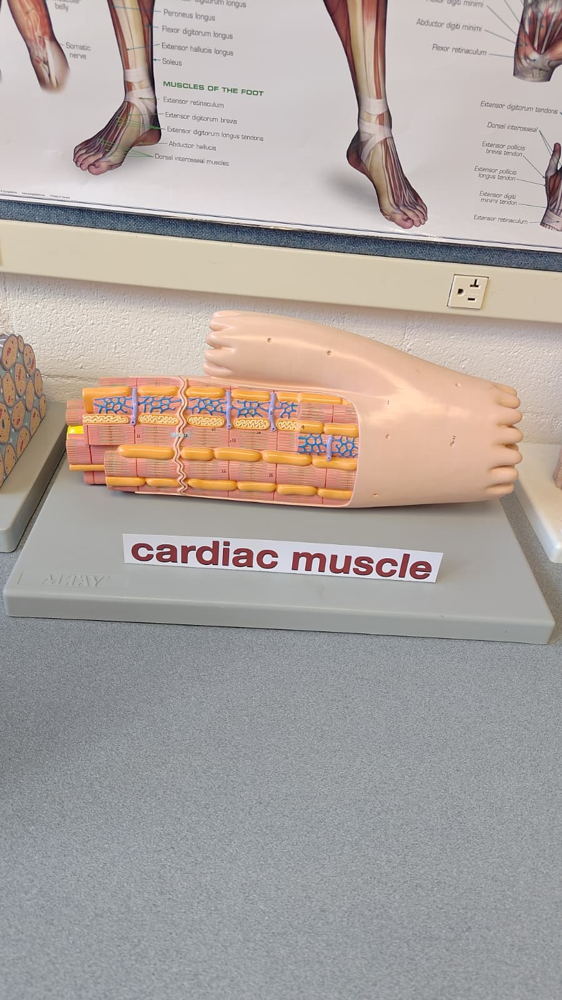
Tendons & Ligaments
Tendons are tough, rope-like bands of connective tissue that attach muscle to bone. When a muscle contracts, the tendon transfers that pulling force directly to the bone, causing it to move. Without tendons, muscles would have nothing to pull on.
Ligaments are similar in structure but serve a different role: they connect bone to bone at joints. Ligaments hold the joint together and limit how far it can move in any direction, preventing dislocation and injury.
Movement Exercises
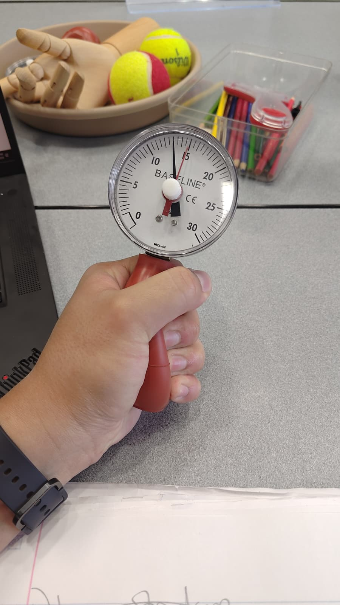
Grip Strength Exercise
Squeezing a hand dynamometer exercises the muscles of the forearm and hand. When you squeeze, the bones of your fingers and palm act as levers. A large group of muscles running through the forearm contract and pull on tendons that thread through the wrist and connect to the finger bones, curling them inward with force.
My reading was 12 out of a maximum of 15, which means I was producing roughly 80% of max grip force. The muscles primarily targeted are the finger flexors in the forearm.
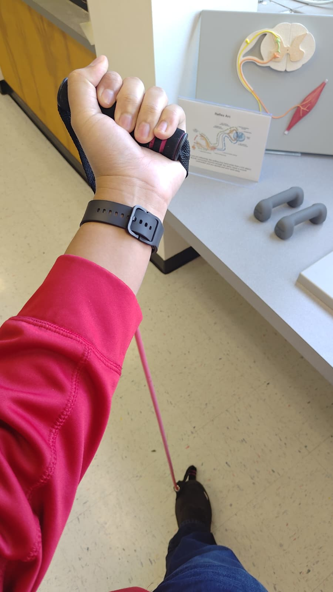
Bicep Curl (Resistance Band)
Pulling a resistance band upward with the fist curled exercises the bicep muscle on the front of the upper arm. The bicep contracts and shortens, pulling on the tendon that attaches at the forearm bone. This rotates the forearm upward at the elbow.
The elbow in this exercise is acting as a hinge joint, allowing movement in one direction: the forearm swinging upward and then back down. The resistance band provides increasing tension the further you pull, making the muscles work harder through the full range of motion.